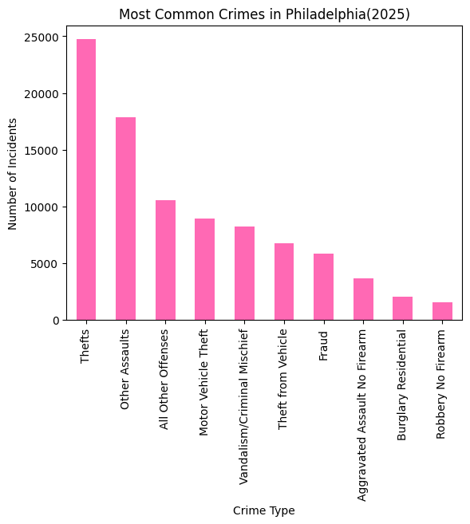
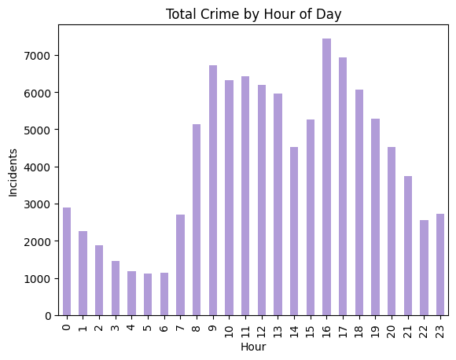
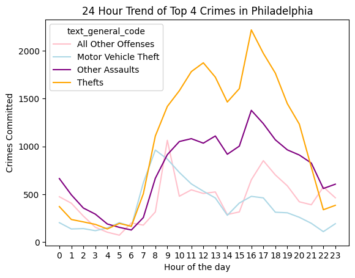

import pandas as pd
import geopandas as gpd
import numpy as np
import camelot
import calendar
import re
import matplotlib.pyplot as pltcrime_df = pd.read_csv('crime.incidents.csv')crime_df.head()| the_geom | cartodb_id | the_geom_webmercator | objectid | dc_dist | psa | dispatch_date_time | dispatch_date | dispatch_time | hour | dc_key | location_block | ucr_general | text_general_code | point_x | point_y | lat | lng | |
|---|---|---|---|---|---|---|---|---|---|---|---|---|---|---|---|---|---|---|
| 0 | 0101000020E610000034D87A0A89CB52C02834C6AA68F5... | 1 | 0101000020110F0000252B547DE0EC5FC1822965612984... | 33239012 | 1 | 1 | 2025-08-29 18:48:00+00 | 2025-08-29 | 14:48:00 | 14 | 2.025010e+11 | 1900 BLOCK Johnston St | 300.0 | Robbery No Firearm | -75.180239 | 39.917257 | 39.917257 | -75.180239 |
| 1 | 0101000020E61000006085A41489CF52C010B29AEBCAF4... | 2 | 0101000020110F00003AF38DECABF35FC1A250FBB47A83... | 31111013 | 12 | 1 | 2025-06-29 10:10:00+00 | 2025-06-29 | 06:10:00 | 6 | 2.025121e+11 | 2500 BLOCK ISLAND AVE | 600.0 | Theft from Vehicle | -75.242742 | 39.912443 | 39.912443 | -75.242742 |
| 2 | 0101000020E6100000483D5F41A7C952C010D2996F95F7... | 3 | 0101000020110F00004C03D720AEE95FC14B4695FD9186... | 29086214 | 3 | 2 | 2025-05-03 03:44:00+00 | 2025-05-02 | 23:44:00 | 23 | 2.025030e+11 | 1100 BLOCK S 4TH ST | 300.0 | Robbery No Firearm | -75.150833 | 39.934248 | 39.934248 | -75.150833 |
| 3 | 0101000020E61000001C788C5D48C752C06028B3F01EFE... | 4 | 0101000020110F00007F7FC043A7E55FC110D4D448D08D... | 36767813 | 24 | 3 | 2025-12-20 01:52:00+00 | 2025-12-19 | 20:52:00 | 20 | 2.025241e+11 | 2900 BLOCK Memphis St | 300.0 | Robbery No Firearm | -75.113792 | 39.985319 | 39.985319 | -75.113792 |
| 4 | 0101000020E61000007C8662EB0CC652C0F83367106E06... | 5 | 0101000020110F00000AB1AD728FE35FC19ECF66340797... | 32504813 | 2 | 2 | 2025-08-08 18:51:00+00 | 2025-08-08 | 14:51:00 | 14 | 2.025020e+11 | 6400 BLOCK RISING SUN AVE | 600.0 | Thefts | -75.094539 | 40.050234 | 40.050234 | -75.094539 |
for hour in range(24):
hour_data = crime_df[crime_df["hour"] == hour]
counts = hour_data["text_general_code"].value_counts()
most_common = counts.index[0]
count = counts.values[0]
print("Hour", hour, ":", most_common, "-", count)
#Big story lead up, what crime happens at what hour.Hour 0 : Other Assaults - 665
Hour 1 : Other Assaults - 495
Hour 2 : Other Assaults - 357
Hour 3 : Other Assaults - 293
Hour 4 : Other Assaults - 190
Hour 5 : Motor Vehicle Theft - 204
Hour 6 : All Other Offenses - 201
Hour 7 : Motor Vehicle Theft - 621
Hour 8 : Thefts - 1110
Hour 9 : Thefts - 1419
Hour 10 : Thefts - 1583
Hour 11 : Thefts - 1783
Hour 12 : Thefts - 1875
Hour 13 : Thefts - 1725
Hour 14 : Thefts - 1465
Hour 15 : Thefts - 1605
Hour 16 : Thefts - 2219
Hour 17 : Thefts - 1974
Hour 18 : Thefts - 1767
Hour 19 : Thefts - 1448
Hour 20 : Thefts - 1234
Hour 21 : Other Assaults - 827
Hour 22 : All Other Offenses - 577
Hour 23 : Other Assaults - 606crime_df["text_general_code"].value_counts().head(10)
#top 10 total amount of diff crime in 2025text_general_code
Thefts 24727
Other Assaults 17881
All Other Offenses 10564
Motor Vehicle Theft 8918
Vandalism/Criminal Mischief 8278
Theft from Vehicle 6763
Fraud 5864
Aggravated Assault No Firearm 3679
Burglary Residential 2075
Robbery No Firearm 1538
Name: count, dtype: int64crime_df["text_general_code"].value_counts().head(10).plot(kind="bar", color="hotpink")
plt.title("Most Common Crimes in Philadelphia(2025)")
plt.xlabel("Crime Type")
plt.ylabel("Number of Incidents")
plt.show()
#visual ^
crime_df["hour"].value_counts().sort_index().plot(kind="bar", color="#B19CD8")
plt.title("Total Crime by Hour of Day")
plt.xlabel("Hour")
plt.ylabel("Incidents")
plt.show()
#Crime is not evenly distributed across the day. Certain hours experience significantly more incidents than others.
top_crimes = crime_df["text_general_code"].value_counts().head(4).index
df_top = crime_df[crime_df["text_general_code"].isin(top_crimes)]
df_top.groupby(["hour","text_general_code"]).size().unstack().plot(color=["pink", "lightblue", "purple", "orange"])
plt.title("24 Hour Trend of Top 4 Crimes in Philadelphia")
plt.ylabel("Crimes Committed")
plt.xlabel("Hour of the day")
plt.xticks(range(24))
#shows the top 4 crimes and where they spike accross the day([<matplotlib.axis.XTick at 0x7fee82ac7bf0>,
<matplotlib.axis.XTick at 0x7fee82a6efc0>,
<matplotlib.axis.XTick at 0x7fee82a77650>,
<matplotlib.axis.XTick at 0x7fee82a77b60>,
<matplotlib.axis.XTick at 0x7fee8529b560>,
<matplotlib.axis.XTick at 0x7fee85298b30>,
<matplotlib.axis.XTick at 0x7fee852997c0>,
<matplotlib.axis.XTick at 0x7fee85031df0>,
<matplotlib.axis.XTick at 0x7fee82b4e7e0>,
<matplotlib.axis.XTick at 0x7fee85299b50>,
<matplotlib.axis.XTick at 0x7fee82b4dcd0>,
<matplotlib.axis.XTick at 0x7fee82b4d370>,
<matplotlib.axis.XTick at 0x7fee82b4d670>,
<matplotlib.axis.XTick at 0x7fee82b4e210>,
<matplotlib.axis.XTick at 0x7fee82b4ce30>,
<matplotlib.axis.XTick at 0x7fee82b4f5f0>,
<matplotlib.axis.XTick at 0x7fee82b4e750>,
<matplotlib.axis.XTick at 0x7fee86847dd0>,
<matplotlib.axis.XTick at 0x7fee868464e0>,
<matplotlib.axis.XTick at 0x7fee82b4c890>,
<matplotlib.axis.XTick at 0x7fee868444d0>,
<matplotlib.axis.XTick at 0x7fee86844e90>,
<matplotlib.axis.XTick at 0x7fee82b5bce0>,
<matplotlib.axis.XTick at 0x7fee82b540b0>],
[Text(0, 0, '0'),
Text(1, 0, '1'),
Text(2, 0, '2'),
Text(3, 0, '3'),
Text(4, 0, '4'),
Text(5, 0, '5'),
Text(6, 0, '6'),
Text(7, 0, '7'),
Text(8, 0, '8'),
Text(9, 0, '9'),
Text(10, 0, '10'),
Text(11, 0, '11'),
Text(12, 0, '12'),
Text(13, 0, '13'),
Text(14, 0, '14'),
Text(15, 0, '15'),
Text(16, 0, '16'),
Text(17, 0, '17'),
Text(18, 0, '18'),
Text(19, 0, '19'),
Text(20, 0, '20'),
Text(21, 0, '21'),
Text(22, 0, '22'),
Text(23, 0, '23')])